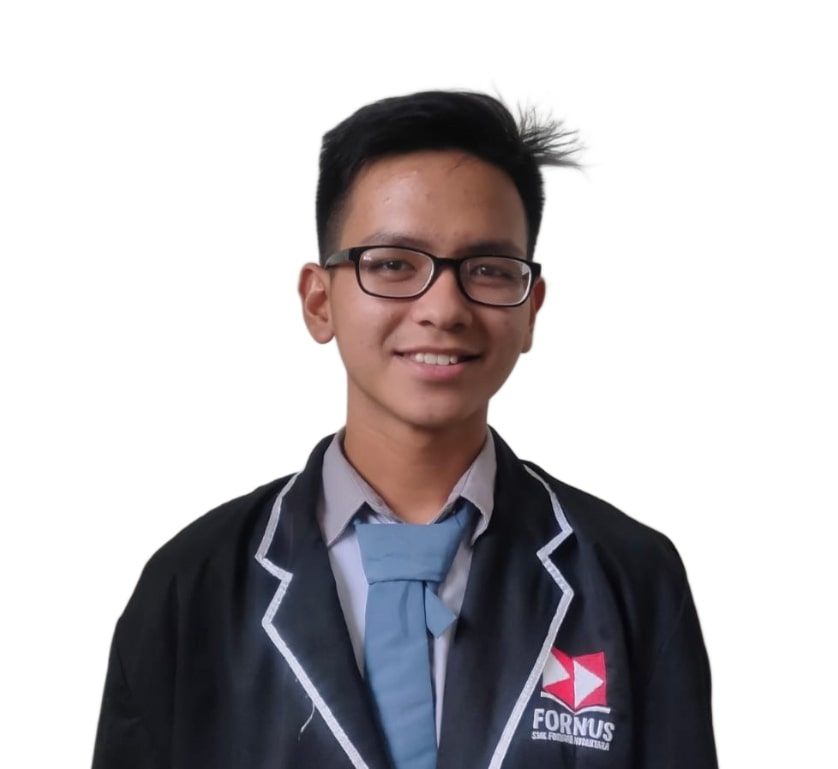

Portfolio
Reymond Christian Hadi
Web Developer

Summary
Hello, my name is Reymond Christian Hadi, I currently studying at Gunadarma University in Indonesia. I'm majoring Information System, but i actually has a huge interest on engineer and programmer. I know my current major doesn't really suit my interest, but i believe it doesn't matter where you study, you can still learn other things.
Education
- Forward Nusantara Vocational School (2019-2022)
- I learned how to assembling a PC
- I learned how to make website using CMS (Content Management System) which is WordPress at the moment
- Gunadarma University (2022-Now)
- Created an University application design as a task using Figma. I don't think they really used it. But my lecturer said it was well done.
- Created an absence program using VB (Visual Basic)
Work Experience
- Mitra Berdikari Abadi (Sept 2021 - Des 2021) (Apprenticeship)
- Created a website for this company using WordPress
- Created a design for the website
- IBLAM School of Law (Feb 2024 - March 2024) (Part Time for 1 month)
- Create a lot of document for accreditation such as Self-Evaluation Report and Lecturer's study's proposal
Hard Skills
- Ms. Office (Word, Excel, and PowerPoint)
- CMS WordPress
- HTML
- CSS
- JavaScript
Soft Skills
- Good Communication
- Can work with team
- Think Critically
- Problem Solving
Certifications
- From this udemy course soon :)
- I actually had a lot of certifications but i don't think the certifications i had is suitable for this thing
Contact Me